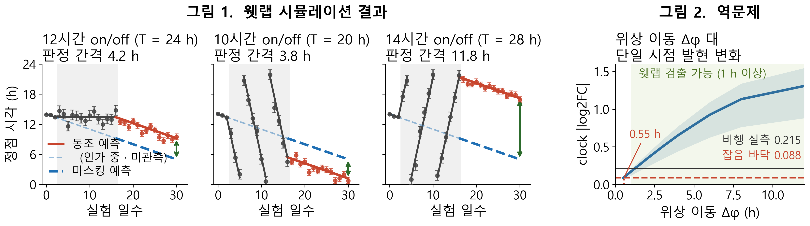

KASA 연구계획서 — 「2 연구의 내용 및 방법」 · 「3 기대효과 및 활용방안」
드라이랩 담당분 원고 · 2026-08 (최종 압축본)
2 연구의 내용 및 방법
□ 연구방법
◦ (나) 드라이랩 — 공개 데이터로 웻랩의 측정 지표와 표본 수를 확정한다
- NASA OSDR 633건(파일 157,801개) · LSDA 2,593건 등 공개 저장소와 문헌을 전수 조사해 원자료를 확보하고, 리듬 지표를 cosinor 로 통일해 실측 위상 오차를 얻는다.
- 이 오차를 잡음으로 두고 회귀선 판정 기준을 적용한다. 절편 검정은 새 위상 형성을, 기울기 검정은 주기 변화를 묻고, 주기 T에서는 정점이 하루 (T − 24)시간씩 이동하므로 효과 크기가 T 선택으로 정해진다. 개체별 회귀 후 1표본 t 검정으로 개체 고유 위상을 상쇄한다.
- 같은 오차로 동조 · 마스킹 두 가설의 예상 궤적을, 지상 아틀라스 진폭으로 단일 시점 발현 변화를 예측한다.
3 연구결과의 기대효과 및 활용방안
□ 예상되는 결과
◦ (1) 측정 지표와 표본 수가 산출되었다
표 1. 검정력 0.8 최소 마리 수 (처치 전 3일 · 처치 14일 · α=0.05). 마리 수가 적은 심부체온을 1차, 활동량을 2차 지표로 둔다.
| 지표 | 절편 2 h |
기울기 12h군 |
기울기 10h군 |
기울기 14h군 |
| 심부체온 | 7 | 10 | 3 | 3 |
| 활동량 | 12~16 | 16 초과 | 3~5 | 3~10 |
- 10 · 14시간 군은 위상이 하루 4시간씩 표류해 3마리로 성립하지만, 12시간 군은 0.3시간이라 절편 검정에 의존한다. 군별 주 검정을 사전 지정한다.
◦ (2) 웻랩 수행 후 예상되는 결과
- 주 가설(그림 1). 세 군 모두 위상이 인가 주기를 따라 이동하고 제거 후 자유진행(free-run) 구간에서도 유지된다. 간격이 표준오차의 6.4~20배라 모두 검출되어 빛이 아닌 중력만으로 동조된다는 결론이 선다. 10시간 군은 내인성 주기 23.7시간과 우연히 일치할 수 없어 결정적이다.
◦ (3) 웻랩 결과가 기존 우주비행 자료의 재해석을 가능하게 한다
- 공개 비행 전사체는 단일 시점이라 진폭 변화와 위상 이동을 구별하지 못하는데, 웻랩이 위상 이동량을 재 오면 그 미지수가 채워진다. 그림 2와 같이 비행 자료가 해석되는 하한 0.55시간과 웻랩 검출 하한 1시간이 겹쳐, 추가 우주 실험 없이 축적된 자료를 재해석할 수 있다.
- 예측은 웻랩 전에 확정한다. 측정값이 하한보다 작으면 비행 자료의 무신호가 분해능 한계임이 확정되고, 크면 그 차이가 중력 이외 요인의 기여 하한이 된다.

그림 1. 오차막대 = 실측 위상 오차(8마리 평균). 그림 2. 음영 = 희생 시각 미상.